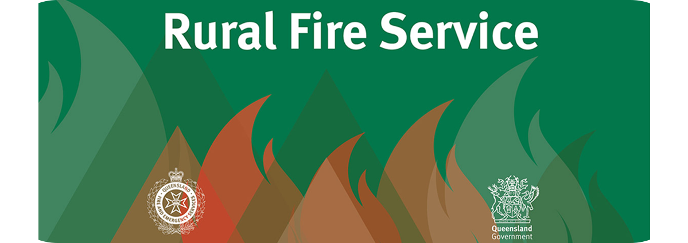
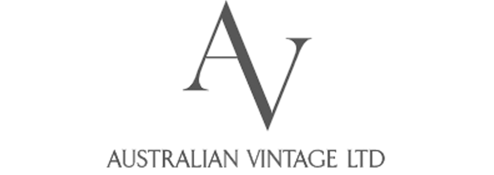

Who?
Gordon Ian Campbell. Scotsman, from a tiny town called Gourock.
Why?
I love creating things. Pictures, words, sounds. Anything, really.
My love of all things computer started when I was nine years old.
What?
I've had my own design company, ZeeDesigns, since the year 2000. I started as a Flash animator and then self taught Actionscript 3.0.
I went on to attain My Advanced Diploma in Graphic Design and Interactive Multimedia. You are welcome to see my journey - my resume is linked below.
Worked with...
Designed a business social media site - 1 month pure "look and feel" work.
Redesigned the Mining Dept website from an old Coldfusion site. Worked all night long with the team.
Programmed the Rural Fire Service's training interactive training application.

I was involved in the development of the Suncorp children's website.
Helped with the redesign of Australian Vintage's website incorporating animated flash components.
Created a new email template for use within Virgin Australia's head office.
Interests
I've made music for many years. Managed and fronted "The Struts" for a decade when I lived in Scotland.
On the side, I work as a signwriter. Some might call me a commercial illustrator and others just call me "that chalk guy". It's nice to mix it up and get away from computer screens once in a while.